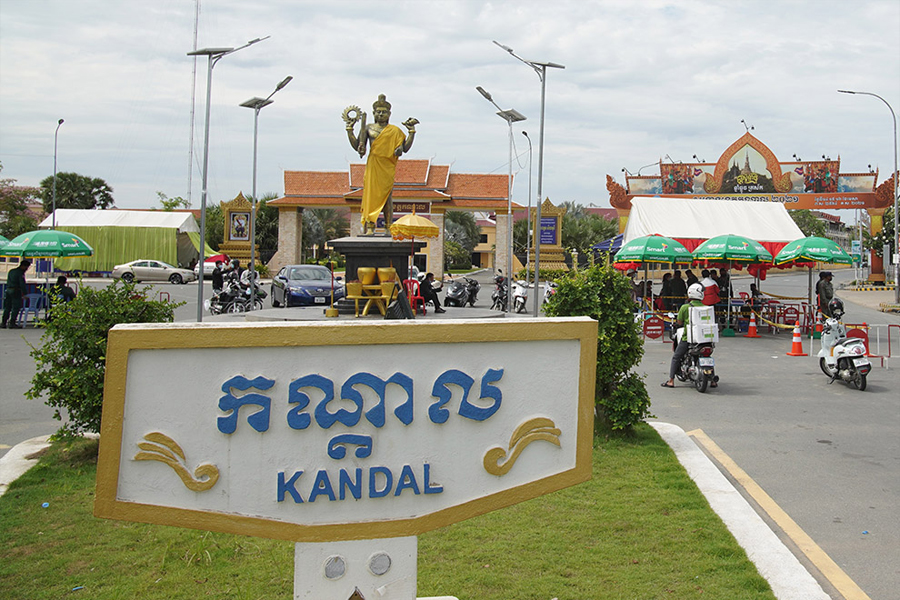

អំពីខេត្តកណ្តាល
ខេត្តកណ្តាល ស្ថិតនៅភាគកណ្តាលនៃព្រះរាជាណាចក្រកម្ពុជា និងជាខេត្តដែលព័ទ្ធជុំវិញ រាជធានីភ្នំពេញ។ ខេត្តនេះមានសារៈសំខាន់ខាងវិស័យកសិកម្ម ពាណិជ្ជកម្ម និងឧស្សាហកម្ម ដោយសារទីតាំងភូមិសាស្ត្រអំណោយផល និងបណ្តាញដឹកជញ្ជូនងាយស្រួល។ កណ្តាលក៏ជាខេត្តដែលមានប្រជាជនរស់នៅច្រើន និងមានការអភិវឌ្ឍយ៉ាងឆាប់រហ័ស។
ប្រវត្តិសង្ខេប
ខេត្តកណ្តាលត្រូវបានបង្កើតឡើងក្នុងឆ្នាំ១៩០៧ និងមានតួនាទីសំខាន់ក្នុងការគាំទ្រ ការអភិវឌ្ឍរបស់រាជធានីភ្នំពេញ។ ដោយសារទីតាំងស្ថិតនៅកណ្តាលប្រទេស ខេត្តនេះបានក្លាយជាមជ្ឈមណ្ឌលពាណិជ្ជកម្ម ការដឹកជញ្ជូន និងផលិតកម្មកសិកម្ម ដែលរួមចំណែកយ៉ាងសំខាន់ដល់សេដ្ឋកិច្ចជាតិ។
កន្លែងទេសចរណ៍សំខាន់ៗ
- ភ្នំព្រះរាជទ្រព្យ (ឧដុង្គ)
- វត្តភ្នំឧដុង្គ
- កោះដាច់
- សួនទឹកហ្គាឌិនស៊ីធី
- រមណីយដ្ឋានទន្លេបាសាក់
- ផ្សារតាខ្មៅ
ទីតាំងភូមិសាស្ត្រ
ខេត្តកណ្តាល ស្ថិតនៅភាគកណ្តាលនៃប្រទេសកម្ពុជា និងព័ទ្ធជុំវិញរាជធានីភ្នំពេញ។ ខេត្តនេះមានព្រំប្រទល់ជាប់ខេត្តកំពង់ស្ពឺ ខេត្តកំពង់ឆ្នាំង ខេត្តកំពង់ចាម ខេត្តព្រៃវែង ខេត្តតាកែវ និងព្រំដែនប្រទេសវៀតណាម។ ទន្លេមេគង្គ និងទន្លេបាសាក់ហូរកាត់ខេត្តនេះ ដែលជួយដល់វិស័យកសិកម្ម ការដឹកជញ្ជូន និងពាណិជ្ជកម្ម។